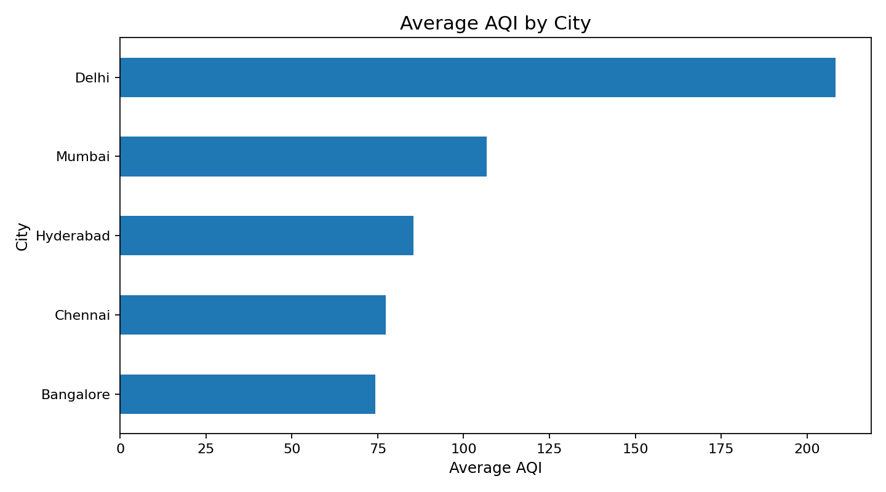
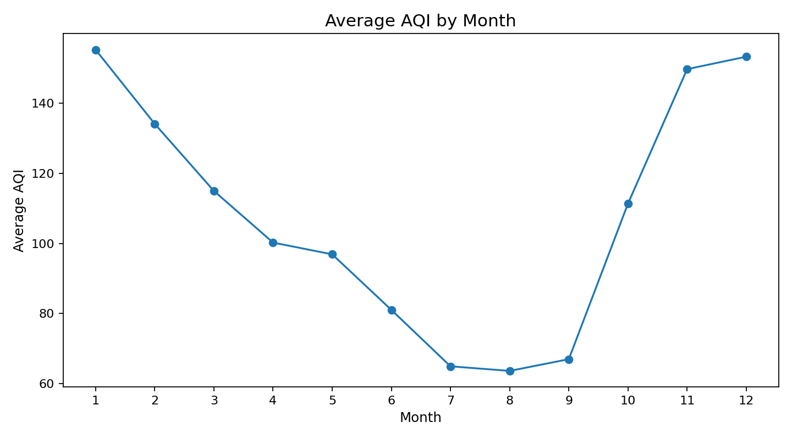
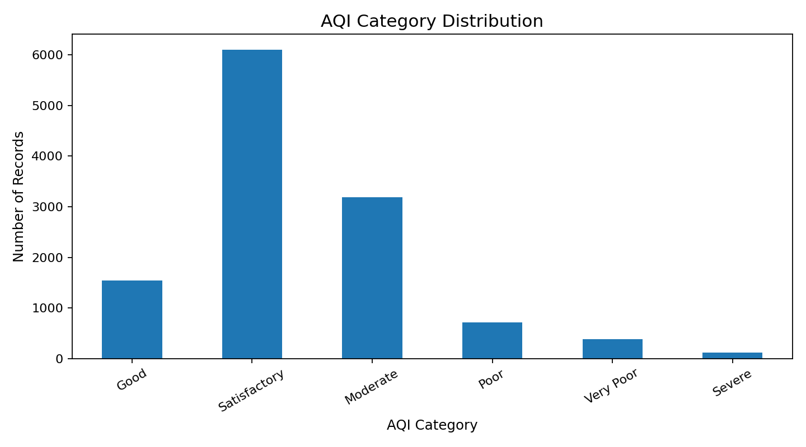
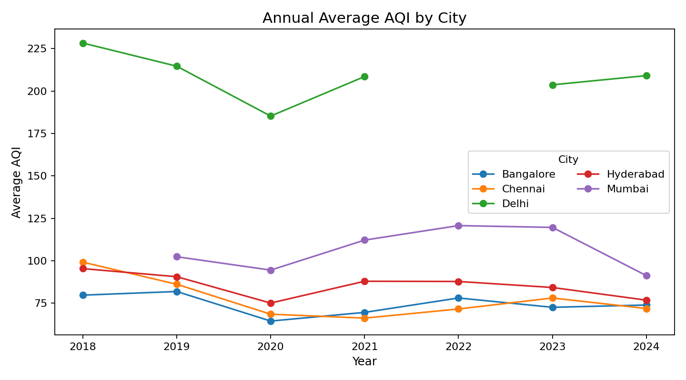
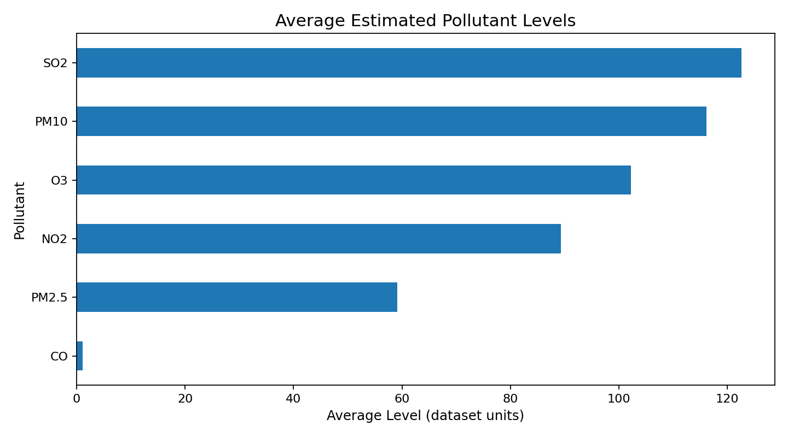
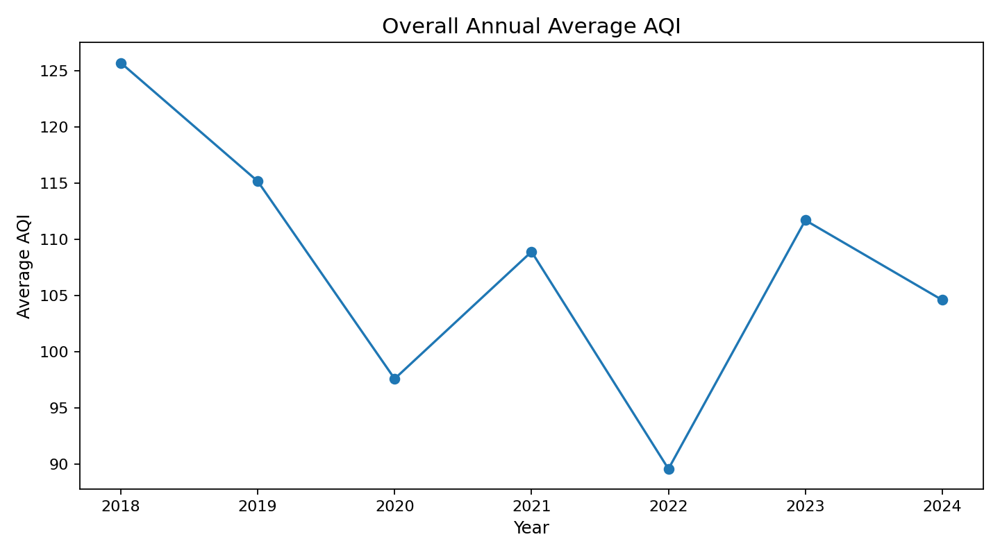

This project analyzes AQI records for Bangalore, Chennai, Delhi, Hyderabad and Mumbai.






The supplied README states that AQI values were sourced from CPCB while pollutant concentrations were mathematically estimated from AQI relationships. Pollutant fields are therefore treated as estimated analytical variables.